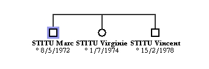

Il faut, au préalable, sélectionner une ou plusieurs personnes Cliquez sur le bouton  ou allez dans le menu Personnes et choisissez Fratrie. Trois situations peuvent se présenter :
ou allez dans le menu Personnes et choisissez Fratrie. Trois situations peuvent se présenter :
Exemple : demande d'ajout des frères et soeurs de Marc STITU :

Par défaut, GénéGraphe vous propose d'ajouter tous les frères et soeurs de la personne. Si vous ne voulez pas ajouter une ou plusieurs personnes, il suffit de cliquer dans la colonne Ajouter pour les décocher.
Quand vous cliquez sur Valider, le logiciel affiche les personnes sélectionnées :
